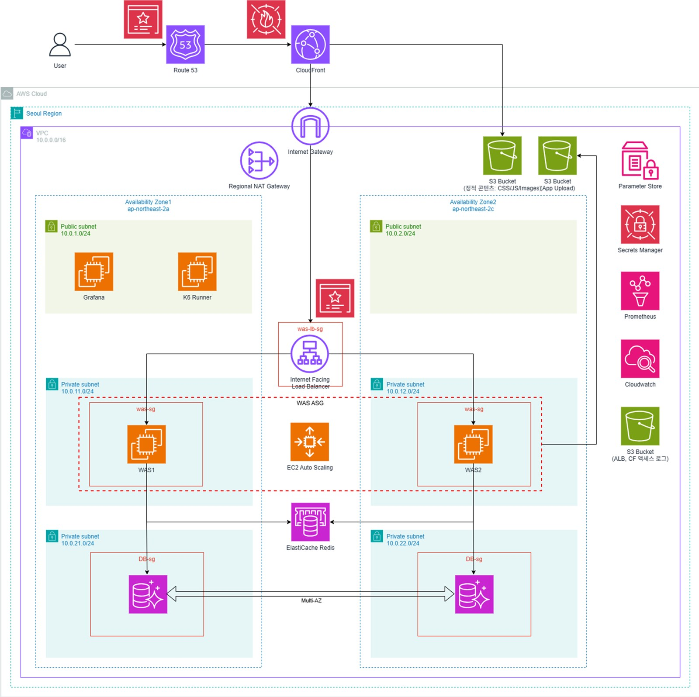

Staybook: AWS 3-tier 숙박 예약 서비스의 WAS 계층
과제 요구는 WEB-WAS-DB 3-tier였습니다. 팀은 Classic 3-tier와 Web 계층을 없앤 CDN 구조를 둘 다 세워 비교한 뒤 CDN 구조(CloudFront/S3 + ALB → WAS ASG → Aurora MySQL · Valkey)로 확정했습니다. 저는 ALB · Target Group · Launch Template · Auto Scaling Group · 보안그룹의 WAS 계층과 로그, 부하 테스트를 맡았습니다.
WAS를 t2.nano → t3.nano → t3.small로 바꿔 가며 8회 이상 구축하고 k6 · CloudWatch · Grafana로 측정했습니다. t3.nano는 초당 50건에서 메모리 90%대, t3.small은 초당 150건에서 50%대였습니다. 사양을 더 올리는 대신 t3.small 2대로 시작해 CPU 60% 목표 추적으로 최대 6대까지 늘리기로 했고, 워밍업 300초는 콜드스타트 실측으로 정했습니다. 계정 이전으로 전부 0.0.0.0/0이 된 보안그룹은 참조 체인(CloudFront prefix-list → ALB → WAS 8080 → DB 3306 · 캐시 6379)으로 복원했고, Tomcat 로그는 인스턴스 종료 시 소실되지 않도록 CloudWatch Logs로 수집했습니다.
- SLO
- p95 500ms 이하 · 에러율 1% 미만 · CPU 70% 미만
- Sizing
- t3.small 2~6대, CPU 60% 추적
- Rollout
- 자동 롤백 instance refresh
- EC2 · ALB · Auto Scaling · EBS
- CloudWatch Logs · SSM
- Linux systemd
- k6 · Grafana
